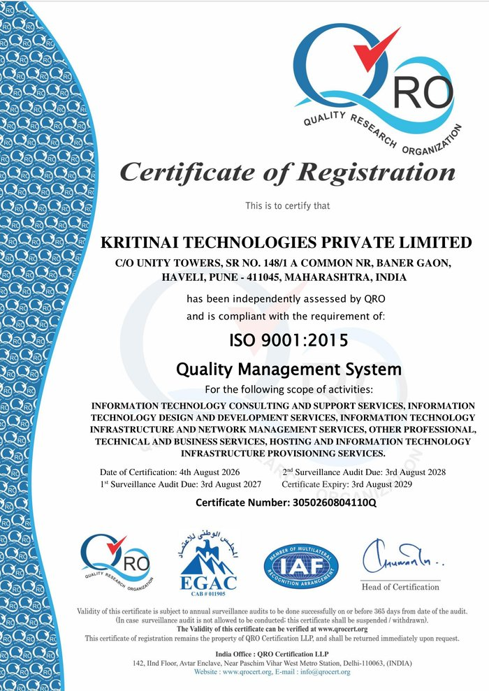

An AI assistant that analyses customer enquiries, finds missing information, cites approved BES documents, builds compliance matrices and drafts responses — with BES engineers approving every output.
Phase I covers Clamp-on Ultrasonic Flowmeters, Coriolis Mass Flowmeters and NOGS Level Measurement Systems. The assistant analyses enquiries, lists missing or contradictory parameters, drafts clarification e-mails, retrieves evidence from approved BES documents, builds a cited compliance matrix and drafts responses for engineer approval. It also runs the enquiry register, assignments, reminders and a management dashboard.
The AI proposes, BES engineers decide. A coded rule — not a prompt — blocks any “Complied” status without an approved source passage. Nothing is sent to a customer from the system in Phase I.
KritinAI Technologies Pvt. Ltd. is a Pune-based engineering company. Our team has built and shipped systems inside Morgan Stanley, Barclays, Deutsche Bank, Citi, UBS and Fiserv, and brings the same discipline to industrial clients.
Cert. 3050260804111IS
Valid to 3 Aug 2029
QRO Certification LLP · IAF

Cert. 3050260804110Q
Valid to 3 Aug 2029
QRO Certification LLP · IAF
CIN U62020PN2025PTC245276 · GSTIN 27AAMCK1105B1Z2 · Pune, Maharashtra
connectus@kritinai.com · +91 8446878088 · kritinai.com
BES has about 27 years of experience in flow, level and density measurement. Today senior engineers hold most selection knowledge; Phase I captures it in approved documents and repeatable checklists, and lays the base for the BASE Digital Technical Department.
Less repetitive work and fewer routine escalations; faster, standardised responses; stronger new engineers; preserved knowledge; structured registration and tracking.
Three product categories · internal users only (5+ named users, 5 roles) · 10–20 approved documents · no pricing, quotations or autonomous customer communication.
All ten §9 safety requirements are treated as acceptance gates, not features — each is enforced in code (see the safety-controls slide).
| Clause | Requirement in brief | What success looks like |
|---|---|---|
| 4.1 Knowledge base | Approved PDF, Word, Excel; BES-administered upload, replace, remove; revision control | Every BES-specific answer cites document, revision and page |
| 4.2 Enquiry analysis | Text, pasted e-mail/WhatsApp or file; 15 parameter groups extracted | Each value tagged Supplied, Inferred, Missing or Awaiting confirmation |
| 4.3 Clarification | Missing or contradictory parameters; technology-specific questions; draft e-mail | Draft only — nothing sent without engineer authorisation |
| 4.4 Product selection | Candidate technologies and BES models from approved documents | No invented models, specifications or certificates; engineer decides |
| 4.5 Compliance matrix | Parameter · requirement · BES spec · status · source; six statuses | No evidence means no “Complied”; Excel export |
| 4.6 Response drafts | Six response types | Human approval before any external use |
| 4.7 Enquiry register | 14 fields, status updates, history, duplicate flagging | Single source of truth for every enquiry |
| 4.8 Assignment & follow-up | Configurable assignment, due dates, reminders, overdue, escalation | Rule-based and auditable |
| 4.9 Dashboard | Eight management measures | Figures computed from records, never estimated by AI |
| 4.10 Training assistant | Q&A for engineers | General knowledge labelled apart from verified BES specifications |
8″ carbon steel, water at 80 °C, 50–250 m³/h, 4–20 mA + RS-485 Modbus.
Correct behaviour: extract stated values; ask for pipe schedule/wall thickness, lining, straight runs, pressure, accuracy, power, hazardous area, sensor temperature rating and quantity; partial matrix; clarification e-mail; register and assign.
Density accuracy of 0.0001 g/cm³ required.
Correct behaviour: flag as critical; compare with the approved datasheet value and its conditions; mark Deviated, or Not verified where evidence is missing; route to senior approval.
Non-contact level detection in a thermal power station.
Correct behaviour: identify the application; retrieve NOGS notes; request hopper geometry, wall construction and thickness, material temperature, mounting access; preliminary assessment with a site-evaluation flag.
All three cases enter the automated test suite on day 1 and run against every code change.
The API is the single entry point: it serves the web app, starts the AI workflow, and reads and writes PostgreSQL and S3. The validator sits between the AI and the user, so an unsupported “Complied” never reaches an engineer’s screen.
Product category, enquiry type, out-of-scope detection (light model).
Typed parameter schema; every value tagged Supplied, Inferred, Missing or Awaiting confirmation, with quoted source text.
Category checklist in code, then technology-specific questions from the model.
Hybrid keyword + vector search over approved, current, role-permitted documents — access filter runs in the database first.
Model proposes a status per parameter and must cite passage IDs.
Citations must exist and support the value; model numbers, figures and certificates checked; unsupported → “Not verified”; conflicts flagged.
Clarification e-mail or response from BES-approved templates.
Workflow pauses until an authorised engineer edits and approves; critical deviations (Case 2) route to a senior approver.
Every step, version and approval saved to the register and audit log.
State is saved after each step — a restart or an AI service error resumes the enquiry instead of losing it (§9.8).
| Layer | Choice | Why | Set aside |
|---|---|---|---|
| User interface | React + TypeScript, responsive | Browser-based, no install; components embeddable in the BES website later | Low-code portals |
| Application API | Python FastAPI | Same language as the AI stack; typed; OpenAPI docs for integrations | Second backend language |
| AI orchestration | LangGraph (MIT), single graph | Explicit, testable steps; durable state; built-in human-approval pause | Multi-agent frameworks (§6) |
| Rule automation | n8n Community Edition, self-hosted | Readable flows; ready connectors for Zoho, e-mail, WhatsApp; no licence fee | Cron-only jobs |
| AI models | Claude Sonnet 5 & Haiku 4.5 on Bedrock (India) | India-only processing; inputs not stored; billed to BES; strong at extraction and citing | OpenAI / Gemini — switchable |
| Embeddings | Amazon Titan Text Embeddings V2 | Runs in Mumbai; very low cost | External embedding APIs |
| Database | PostgreSQL 16 + pgvector on RDS | One store for records, vectors, audit and workflow state; managed backups | Separate vector DB vendor |
| Documents | pdfplumber, pypdf, python-docx, openpyxl; Textract | Permissive licences; tables preserved; OCR for scans | AGPL PDF libraries |
| Hosting | EC2 + Docker Compose + Caddy HTTPS | Simple and low cost at pilot scale; portable; clear path to ECS | Kubernetes (overkill) |
| Auth & monitoring | Built-in RBAC + TOTP; CloudWatch + in-app AI run log | No per-user fees; cost per enquiry measured for §13 | External AI tracing services |
Performance targets, measured in UAT: typical enquiry analysed in under 90 seconds; document search answers in under 5 seconds. Backups: RDS point-in-time recovery (7 days), weekly snapshots, S3 versioning, tested restore runbook.
| §9 | Requirement | Enforced by |
|---|---|---|
| 1 | BES claims traceable to approved sources | Retrieval limited to approved, current revisions; citation required on every BES-specific claim |
| 2 | Missing information identified | Category checklist in code plus provenance tags on every parameter |
| 3 | No unsupported specifications | Validator checks values, model numbers and certificates against cited passages |
| 4 | Conflicting documents flagged | Validator compares values across cited passages and raises a conflict flag |
| 5 | AI never approves suitability | No approval action exists for the AI; only users with the right role can approve |
| 6 | Human approval before external communication | Workflow pause; drafts marked “Draft — not approved” until signed off |
| 7 | No quotations or commitments | Commercial terms blocked in prompts and templates; no pricing data in the knowledge base |
| 8 | Errors recorded and communicated | Error log, user message and admin alert for every failed step |
| 9 | Uploads treated as data | Uploaded text wrapped and labelled as data; the AI has no tools that send, delete or change records; outputs schema-checked |
| 10 | No unauthorised retrieval | Role and document-access filter in the database query, plus permission tests in the test suite |
| Clause | Requirement | Status | How KritinAI meets it |
|---|---|---|---|
| §3 | Three categories; add more without redevelopment | C | Each category is a configuration pack (checklist, rules, documents) — no code change to add one |
| 4.1 | Knowledge base, document types, BES administration, revisions | C | Admin console; replacing a document creates a new revision and retires the old one from retrieval |
| 4.1 | Searchable PDF, Word, Excel | CC | Text PDF, DOCX, tabular XLSX fully; scanned PDFs by OCR within an agreed page limit (C2) |
| 4.2 | Three input channels; 15 parameter groups; supplied vs inferred vs missing | C | Text, paste, file upload (PDF, DOCX, XLSX, TXT, EML); typed schema; provenance tag + quoted text per field |
| 4.3 | Clarifications, draft e-mail, no automatic transmission | C | Checklist + AI reasoning; no customer-facing send function in Phase I |
| 4.4 | Product selection from approved documents only; no invention | C | Post-generation validator checks every model number, value and certificate against cited passages |
| 4.5 | Matrix format, six statuses, no evidence → no “Complied”, Excel | C | Enforced in code; unsupported statuses downgraded to “Not verified”; formatted .xlsx export |
| 4.6 | Six draft types; human approval; no pricing | C | Templates per type; approval recorded; commercial terms blocked |
| 4.7 | 14-field register, history, duplicates | CC | All fields and version history; duplicates flagged for user decision (C4) |
| 4.8 | Assignment, reminders, overdue, escalation | CC | Rule-based; reminders on dashboard and by internal e-mail (C5) |
| 4.9 / 4.10 | Dashboard from records; training assistant | C | SQL aggregates only; answers split into “Verified from BES documents” and “General engineering guidance” |
| Clause | Requirement | Status | KritinAI response |
|---|---|---|---|
| §5–§9 | Sample cases, architecture, integrations foundation, five roles & RBAC, ten safety rules | C | Built into the test suite; architecture slides; API-first; access filter in database queries |
| §10 | 15 working days | D | 15 working days to a fully demonstrated, tested system; +5 for UAT, fixes, training and handover (D1) |
| §11 | 20 mandatory deliverables | C | All 20 delivered — mapping on the methodology slide |
| §12 | UAT, scorecard, minimum criteria | CC | Accepted; test-case and scoring conventions agreed at M1 (C6, C7) |
| §13 | Productivity measures | CC | All seven measured; 40% target pursued, not guaranteed — as the RFQ states (C8) |
| §14–§15 | NDA, data protection, disclosures, IP, BES-owned accounts | C | Data security and ownership slides |
| §16 | Vendor qualification | C | Team & qualification slides |
| §17–§18 | Itemised fixed price; recurring cost; TCO; 20/40/40 payments | C | Commercial slides; payment terms accepted |
| §19 | 90-day warranty, targets, AMC | CC | Accepted; third-party outages excluded from targets (C9) |
| §20–§22 | Governance, change management, exclusions | C | Accepted as written |
| §24 | Validity ≥ 30 days | C | 45 days |
D1 · Schedule (§10): Days 1–15 build, demonstrate and test all modules (RFQ M1–M4 + internal acceptance). Days 16–20 joint UAT with held-back cases, corrections, retest, restore demo, training and handover. If all inputs arrive on Day 0 and UAT cases by Day 10, we will aim to finish within 15 days and report daily.
| No. | Topic | Clarification |
|---|---|---|
| C1 | Pilot capacity | Up to 15 named users, 10 concurrent, 1,000 enquiries/month, 30 documents or 2,000 pages |
| C2 | Document processing | Text PDF, DOCX, tabular XLSX fully; OCR up to 300 scanned pages; drawings, P&IDs, images stored and cited but not interpreted |
| C3 | Language | English; partly Tamil/Hindi enquiries best-effort and flagged for review |
| C4 | Duplicates | Flagged for user decision, not blocked automatically |
| C5 | Notifications | Dashboard and internal e-mail; WhatsApp/SMS alerts a later option |
| C6 | UAT test cases | Within the three categories and supported formats; “out of scope”, “Information required” or “Not verified” can be correct answers; outcomes written before testing |
| C7 | Extraction accuracy | Mandatory parameters and scoring rules agreed at M1; 90% applies to clearly stated values |
| C8 | Productivity | Timed manual baseline vs AI-assisted run on the same enquiries; reported as measured |
| C9 | Support | Targets exclude AWS / Bedrock / third-party outages — we diagnose, inform and restore when service returns |
Sample cases + 20 synthetic enquiries become an automated test set on day 1, run on every change: extraction, missing-parameter recall, citation validity, zero unsupported “Complied”.
Claude Code and Google Antigravity generate scaffolding, screens, APIs and tests. The senior engineer reviews every pull request; the architect reviews retrieval, security and the validator. No BES data in coding tools.
Assignment, due dates, reminders, escalation, status and dashboard figures are deterministic code. AI only where language understanding is needed.
Checklists, clarification and selection rules per category live in versioned files reviewed by BES engineers.
Working software at every milestone, on BES’s own AWS account.
Prompts, configuration and code in a BES-owned Git repository, each change linked to a requirement.
| Test layer | Covers | Who |
|---|---|---|
| Unit, API & workflow tests | Business rules, RBAC, exports, duplicates, assignment, reminders, escalation, approvals | Developers (automated) |
| AI evaluation suite | Extraction, clarification, retrieval, compliance status, refusal to over-claim | Senior AI engineer |
| Security & restore | Role bypass, restricted retrieval, prompt injection in uploads, OWASP Top 10; backup restore drill | Architect & senior engineer, witnessed by BES |
| Joint UAT | 20+ BES enquiries incl. held-back cases, RFQ scorecard | BES acceptance team with KritinAI |
| RFQ §11 deliverables | Delivered as | Milestone |
|---|---|---|
| 1–12 Application modules | Working application on BES AWS (staging and production) | M2–M4 |
| 13 Source code | Git repository in the BES GitHub organisation, full history | Continuous; final tag at handover |
| 14 Workflows, prompts, configuration | In the repository; n8n workflows exported as JSON | Handover |
| 15 Database structure & export | Schema migrations, data dictionary, one-click CSV/SQL export | M4 |
| 16–18 Documentation | Architecture, installation & deployment, user and administrator manuals | M5 |
| 19 Test report & limitations | Evaluation results, UAT scorecard, known-limitations register | M5 |
| 20 Training & handover | Two sessions (engineers; administrators) + recordings; technical handover to BES or nominee | M5 |
| Milestone | Deliverables | Demo |
|---|---|---|
| M1 · 1–3 | Confirmed requirements and parameter lists; architecture document; AWS environment; knowledge base loaded; first demo of search and Case 1 extraction | Day 3 |
| M2 · 4–7 | Retrieval with citations; enquiry analysis for all three categories; clarification drafts; evaluation report 1 | Day 7 |
| M3 · 8–10 | Compliance matrix with validator and Excel export; six draft types; register with duplicate flagging; evaluation report 2 | Day 10 |
| M4 · 11–12 | Five roles and document access; assignment, reminders, escalation; dashboard; training assistant | Day 12 |
| M5 · 13–20 | Internal acceptance (13–15); joint UAT on 20+ enquiries, corrections, productivity measures, training, documentation, code and account handover (16–20) | Days 15 & 20 |
| BES input | By | If late |
|---|---|---|
| Signed NDA and work order | Day 0 | Start moves |
| BES-owned AWS (Mumbai) and GitHub organisation | Day 0 | We can create them with BES on a call |
| 10–20 approved documents | Day 0 | Day-for-day shift |
| Technical coordinator, 1-day replies | Day 1+ | Day-for-day shift |
| Selection rules and approval roles | Day 3 | M2 shifts |
| 20+ UAT enquiries with expected outcomes | Day 10 | UAT shifts |
| Acceptance team available | 16–20 | Acceptance shifts |
| Bedrock model access in Mumbai | Day 1 | Fallback to another approved model |
| Risk | Mitigation |
|---|---|
| Documents late or scanned images | Day 0 checklist; OCR within C2 limits; quality check on Day 1 |
| Selection rules not documented | Day 2 workshop; rules captured as configuration for BES sign-off |
| Held-back UAT cases out of scope | C6: expected outcomes written before testing |
| AI output quality varies | Evaluation suite on every change; model version pinned; validator as a hard stop |
| Compressed schedule | Testing from day 1; protected 5-day UAT window |
| Role | Name | Commitment | Responsibilities |
|---|---|---|---|
| Project Manager & Delivery Lead | Awanish Kumar Prajapati, Director | ~60% (12 days) | Single point of accountability; BES liaison; governance; every technical review; UAT. 18+ years in enterprise Java/Spring Boot, microservices, DevOps, Gen AI and agentic AI |
| Solution Architect | [Name] — contract architect engaged by KritinAI | 8 days, front-loaded | Architecture, retrieval and validator design, security review, M1 sign-off, go-live review |
| Senior Agentic AI Engineer | [Name] | Full time, 20 days | LangGraph workflow, RAG, extraction, validator, evaluation suite, n8n |
| AI / Full-stack Engineer | [Name] | Full time, 20 days | React UI, register, dashboard, exports |
| AI / Backend Engineer | [Name] | Full time, 20 days | FastAPI, RBAC, document admin, notifications, tests, deployment |
Subcontractors: none. The Solution Architect is an individual consultant on a time-and-material contract with KritinAI, bound by the same NDA and IP terms. KritinAI remains fully responsible.
Kick-off & schedule Day 1 · daily e-mail summary · milestone reports M1–M5 · demos on days 3, 7, 10, 12, 15, 20 · live dependency, risk & issue registers · written change requests · completion report. Escalation: Senior AI Engineer → Awanish Kumar Prajapati → BES Director – Technical.
| No. | RFQ item | KritinAI response |
|---|---|---|
| 1–2 | Project manager and development team | Team slide; CVs in Annexure A |
| 3, 5 | Previous AI, RAG and workflow projects; KritinAI’s actual contribution | Annexure B: [project, sector, scope, KritinAI role, period, what was built and by whom] |
| 4 | Live demonstration | Offered on a date of BES’s choice: [application to be demonstrated] |
| 6 | Customer references | [Reference name, organisation and contact, where permitted] |
| 7 | Subcontractors | None; one individual contract architect |
| 8 | Proposed architecture | Architecture slides |
| 9 | Certifications | ISO/IEC 27001:2022 (3050260804111IS) and ISO 9001:2015 (3050260804110Q), QRO Certification LLP, IAF-accredited, valid to 3 Aug 2029 · CIN U62020PN2025PTC245276 · GSTIN 27AAMCK1105B1Z2 |
| 10 | Director’s involvement | Confirmed — the Director is the Project Manager, attends every milestone review and signs off each deliverable |
| S. No. | Description | Amount (INR) |
|---|---|---|
| 1 | Requirement study and system architecture | 85,000 |
| 2 | AI knowledge-base development | 1,30,000 |
| 3 | Technical enquiry analysis module | 1,40,000 |
| 4 | Compliance matrix and response generation | 1,40,000 |
| 5 | Enquiry register and workflow automation | 1,05,000 |
| 6 | Management dashboard and user interface | 95,000 |
| 7 | Security and user administration | 70,000 |
| 8 | Testing and deployment | 75,000 |
| 9 | Training, documentation and handover | 60,000 |
| 10 | Warranty support (90 days) | 45,000 |
| Total one-time development cost | 9,45,000 | |
| Applicable GST (IGST 18%) | 1,70,100 | |
| Grand total | 11,15,100 |
All 20 mandatory deliverables · BES AWS staging and production setup · automated evaluation suite · two training sessions with recordings · 90-day warranty.
AWS hosting and AI usage (billed by AWS to BES) · section 06 exclusions · work beyond C1 pilot capacity.
| Optional, only if BES asks | INR, excl. GST |
|---|---|
| Each additional product category | 75,000 |
| Single sign-on (Microsoft 365 / Google) | 40,000 |
| Knowledge base beyond C2 limits | 6,000 / 100 pages |
| Change requests and enhancements | 9,000 / person-day |
| Description | Monthly (INR) | Annual (INR) | Billed by |
|---|---|---|---|
| Cloud hosting — EC2 t4g.large + 50 GB, S3 with versioning, backups, CloudWatch, SES | 5,300 | 63,600 | AWS → BES |
| AI model / API usage — Bedrock (Claude, Titan embeddings), Textract OCR | 3,700 | 44,400 | AWS → BES |
| Database and storage — RDS PostgreSQL db.t4g.medium, 50 GB, 7-day PITR | 6,800 | 81,600 | AWS → BES |
| Workflow automation licences — n8n Community Edition, self-hosted | 0 | 0 | — |
| User licences | 0 | 0 | — |
| Maintenance & technical support — AMC from month 4, optional | 15,000 | 1,80,000 | KritinAI |
| Other third-party — Let’s Encrypt SSL, BES sub-domain, GitHub free tier | 0 | 0 | — |
| Total recurring expenditure | 30,800 | 3,69,600 |
Cloud and AI are billed by AWS directly to the BES account at actual usage — KritinAI adds no mark-up. AWS invoices in India carry GST. Without AMC, BES pays only the AWS lines.
| Enquiries / mo | AI | Cloud + DB | AMC | Total / mo |
|---|---|---|---|---|
| 100 | 3,700 | 12,100 | 15,000 | 30,800 |
| 500 | 18,500 | 12,100 | 15,000 | 45,600 |
| 1,000 | 37,000 | 21,700 | 15,000 | 73,700 |
| Enquiries / mo | Year 1 TCO | 3-year TCO |
|---|---|---|
| 100 | 12,69,600 | 20,08,800 |
| 500 | 14,47,200 | 25,41,600 |
| 1,000 | 17,84,400 | 35,53,200 |
INR, excl. GST. TCO = one-time price + 12 months of cloud and AI per year + AMC (9 months in year 1, 12 thereafter). At 1,000/month we move to EC2 t4g.xlarge and RDS db.t4g.large (+≈₹9,600/month).
| Assumption | Value |
|---|---|
| Main model | Claude Sonnet 5, Bedrock India; US$2.75 in / 13.75 out per M tokens (incl. 10% regional premium) |
| Light model | Claude Haiku 4.5; US$1.10 in / 5.50 out per M tokens |
| AI calls per enquiry | 5: extract, clarify, compliance, draft, one redraft |
| Tokens per enquiry | ~51,000 input (incl. ~15,000 retrieved) and 9,500 output |
| Training assistant | 3 questions per enquiry, ~8,800 tokens each |
| Embeddings + OCR | Titan V2 (US$0.02 / M tokens) + Textract; < US$0.01 per enquiry |
| Safety margin · FX | 20% · ₹95 per US$ |
| Documents · storage | ≤ 30 docs / 2,000 pages indexed once · < 20 GB in year 1 |
Prompt caching should cut AI cost by a further 15–25%. Real cost per enquiry is measured in UAT and reported (§13).
| Severity | Example | Initial response | Workaround / resolution |
|---|---|---|---|
| Critical | Application unavailable; security incident; wrong status shown as “Complied” | Within 4 business hours | Workaround in 1 working day; fix in 3 working days |
| Major | Export, assignment or document upload unavailable | Within 1 working day | Fix in 5 working days |
| Minor | Non-critical or cosmetic defect | Within 2 working days | Next scheduled release, within 15 working days |
Defects in agreed functionality · security defects · restoring functionality after failure · documentation updates · re-running the evaluation suite after AI fixes.
Same targets · security, dependency and model-version updates · monthly health report (uptime, errors, cost per enquiry) · 8 hours/month of small enhancements · annual review capped at 8%.
Mon–Sat 10:00–18:00 IST, excl. national holidays; security incidents any time, BES notified within 24 hours. L1 Backend Engineer → L2 Senior AI Engineer → L3 Director.
| Provider | Role | Location | Data handled | Owner |
|---|---|---|---|---|
| Amazon Web Services | EC2, RDS, S3, CloudWatch, SES, Textract | Mumbai (ap-south-1) | Documents, enquiries, records, logs | BES |
| Amazon Bedrock (Anthropic Claude) | AI inference, embeddings | India geographic inference: Mumbai & Hyderabad only | Enquiry text and retrieved passages, per request; not stored by default | BES |
| GitHub | Source repository | Global | Code, configuration, prompts — no BES data | BES org |
| KritinAI | Developer & support | Pune | Named, time-limited access accounts only | — |
Lock-in: one model interface — switch to another Bedrock model, Anthropic API, OpenAI or Gemini by configuration and an evaluation re-run. Docker containers move to any cloud or on-premises server.
| Component | Licence | Restriction |
|---|---|---|
| React, TypeScript, Vite | MIT / Apache-2.0 | None |
| FastAPI, Pydantic | MIT | None |
| LangGraph, LangChain | MIT | None |
| PostgreSQL, pgvector | PostgreSQL | None |
| pdfplumber, pypdf, python-docx, openpyxl | MIT / BSD | None |
| n8n Community Edition | Sustainable Use License | Free for BES internal use on its own server; not for resale or hosting for others |
| Docker, Caddy | Apache-2.0 | None |
| Amazon Bedrock, Textract, SES | AWS Customer Agreement | Pay per use |
| Integration | Approach | Notes / extra licences |
|---|---|---|
| BASE website (Phase V) | Embeddable chat and enquiry widget on the same API with the public role; enquiries go straight into the register | Hosting and redesign separate; rate limiting and spam protection |
| Zoho CRM or another CRM | Two-way sync via n8n’s Zoho connector or Zoho REST API | API limits depend on the Zoho edition; licences are BES’s |
| E-mail intake | Shared mailbox via Microsoft 365 / Gmail APIs or SES inbound; auto-registered for review | Mailbox owned by BES |
| WhatsApp Business | Meta WhatsApp Cloud API via n8n; replies only after approval | Meta per-conversation charges; verified number, approved templates |
| Tender analyst (Phase II) | Reuses the extraction and compliance engine | Large-document handling sized then |
| Purchase, service, ERP (III–IV) | REST or database connectors via n8n or the API | Depends on the ERP’s API |
| Reporting (Phase VI) | Read-only reporting views or a BI tool on PostgreSQL | BI licence if chosen |
Scaling path: the same containers move to AWS ECS with auto-scaling and a multi-AZ database — no code changes.
None of these changes the price unless BES widens the scope.
Do we agree the C1 pilot capacity (15 users, 10 concurrent, 1,000 enquiries/month, 30 documents or 2,000 pages)?
Are any Phase I documents scanned, and roughly how many pages in total?
Which documents or customer data are confidential, and which roles may see them?
Who approves which response types? Does Case 2 always need Director approval?
Does BES have an AWS account and GitHub organisation, or should we help create them in BES’s name?
Is AWS Mumbai with India-only AI processing acceptable, or is a specific provider required?
Which BES e-mail domain should internal reminders use?
Who is the BES technical coordinator, and who forms the acceptance team?
Can BES share 5–10 anonymised past enquiries with engineer responses at kick-off for the §13 baseline?
Are the 20/40/40 terms and the 5-working-day UAT window (D1) acceptable?
On receipt of the work order and NDA, we start Day 1 with the kick-off and execution schedule — and demonstrate working software on Day 3.
Awanish Kumar Prajapati, Director
Signature: ____________________ Date: ________
Name / Designation: ____________________
Signature: ____________________ Date: ________